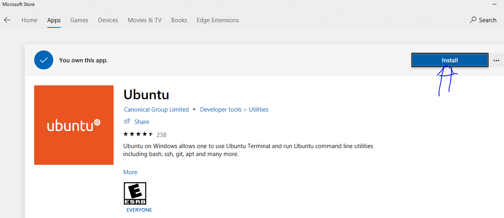
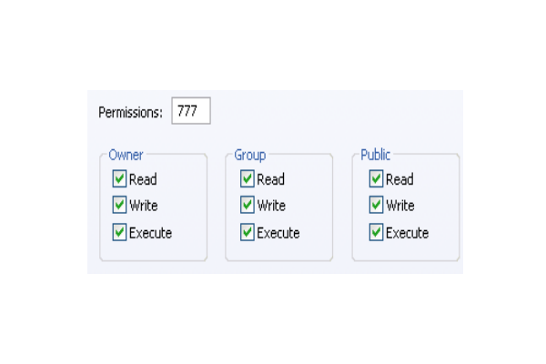
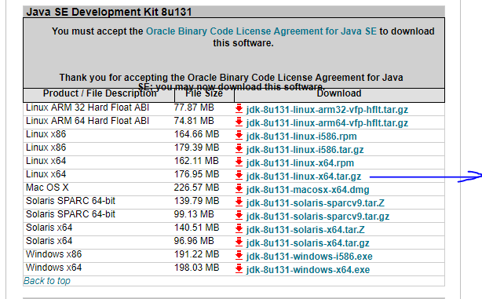

Basic Linux Command
Practice Linux on Windows 10
we can practice linux command in windows 10 sub system. Proceed the following steps:
Step 1: Install ubuntu from apps store

Step 2: Open ubuntu after successful installation
If any error occurred like “sub system is not enabled” then open powershell as administrator & run the bellow command
Enable-WindowsOptionalFeature -Online -FeatureName Microsoft-Windows-Subsystem-Linux
Then open ubuntu & set user password when it will be ready.
Listing files and directories
| COMMAND | Description |
|---|---|
| cd - | Returns you to your previous working directory |
| cd ~ | Returns you to your login directory |
| cd | Returns you to your login directory |
| cd $HOME | Returns you to your login directory |
| cd / | Takes you to the entire system’s root directory. |
| cd /root | Takes you to the home directory of the root user. You must be the root user to access this directory. |
| cd /home | Takes you to the home directory, where user login directories are usually stored |
| cd .. | Takes you to the directory one level up. |
| cd /dir1/dir2/ | Regardless of which directory you are in, this absolute path takes you directly to dir2, a subdirectory of /dir1/. |
| cd ../../dir2/dir3/ | This relative path takes you up two directories, then to dir2/, and finally into its subdirectory dir3/. |
| pwd | displays the current directory. |
| mkdir dirname | make directory |
| chmod -R 777 dirname | Read, write and execute permission to all user group |
| mkdir -m 777 dirname | creates an empty directory with permission |
| ls | displays the file & directory of the current directory. |
| ls -a | list also files/directories which begin with a dot (hidden) |
| ls -l | long listing format. Displays permissions, user and group, time stamp, size, etc. |
| ls -r | for directories, all sub-directories will be displayed recursively. |
| ls directory | displays the file & directory of the corresponding directory. |
File management
| COMMAND | Description |
|---|---|
| cp file1 file2 | copies files or directories. file1 is copied to file2. if file2 already exists, it is overwritten |
| cp -r dir1 dir2 | recursively with all subdirectories & files |
| mv file1 file2 | Rename or move files |
| mv dir1 dir2 | Rename or move directories |
| rm [-irf] file(s)/directory(ies) | Delete files and/or directories. (-i: delete only after confirmation, -r: directories will be recursively deleted, -f: force) |
| rmdir directory_name | removes any empty directories, but cannot delete a directory if a file is present in it. |
| cat file | to view the contents of a file |
File create, edit, save
Create File
touch fileName
Example:
touch test.txt
Edit file (using Pico & Nano)
pico hello.txt
^G Get Help ^O WriteOut ^R Read File ^Y Prev Page ^K Cut Text ^C Cur Pos
^X Exit ^J Justify ^W Where Is ^V Next Page ^U UnCut Text^T To Spell
‘ctrl+o’: write the changes to the file
‘ctrl+x’: exit from the editor
‘ctrl+g’: help menu
Edit file (using VI editor)
vim file
Exit vim without saving changes
Press the ESC key
Type :q!
Press the ENTER key
Save a file and exit
Press the ESC key
Type :wq
or
Type :x
Press the ENTER key
Permission

Different combinations:
- 0 – No permission
- 1 – Execute
- 2 – Write
- 3 – Write and execute
- 4 – Read
- 5 – Read and execute
- 6 – Read and Write
- 7 – Read, write and execute
echo command
This command will echo whatever you provide it.
echo "test"
test
echo $HOME
/home/rakib
whoami command
This command reveals the user who is currently logged in.
whoami
root
whatis command
This command gives a one line description about the command. It can be used as a quick reference for any command.
whatis date
date (1) - print or set the system date and time
Clear Screen
clear
locate
locate -i hello
Cent OS
YUM (YellowDog Updater Modified)
yum is the primary tool for getting, installing, deleting, querying, and managing Red Hat Enterprise Linux RPM software packages from official Red Hat software repositories, as well as other third-party repositories.
Update Yum
yum update
Install Java
Go to Java Download page & get the linux tar.gz file download url 
cd /opt/
wget --no-cookies --no-check-certificate --header "Cookie: gpw_e24=http%3A%2F%2Fwww.oracle.com%2F; oraclelicense=accept-securebackup-cookie" "URL_LINK"
Here URL_LINK will be java download Link. First ensure the link is working or not. If sign in required for old java version, we can download manually.
tar xzf jdk-8u131-linux-x64.tar.gz
cd /opt/jdk1.8.0_131/
alternatives --install /usr/bin/java java /opt/jdk1.8.0_131/bin/java 2
alternatives --config java
alternatives --install /usr/bin/jar jar /opt/jdk1.8.0_131/bin/jar 2
alternatives --install /usr/bin/javac javac /opt/jdk1.8.0_131/bin/javac 2
alternatives --set jar /opt/jdk1.8.0_131/bin/jar
alternatives --set javac /opt/jdk1.8.0_131/bin/javac
java -version
export JAVA_HOME=/opt/jdk1.8.0_131
export JRE_HOME=/opt/jdk1.8.0_131/jre
export PATH=$PATH:/opt/jdk1.8.0_131/bin:/opt/jdk1.8.0_131/jre/bin
echo $JAVA_HOME
echo $JRE_HOME
source /etc/profile
Bahmni Setup
NB: Example: If implementation_name is 'bd-uhc', then app config will be picked up from the /etc/bahmni-installer/deployment-artifacts/bd-uhc_config folde
Step 1:
#Prerequisite for the fresh installation of Bahmni
wget https://bitbucket.org/pypa/setuptools/raw/0.7.2/ez_setup.py
python ez_setup.py
you may run this --- yum upgrade python-setuptools
Step 2:
# Install the bahmni command line program (Choose the version you want).
yum install https://dl.bintray.com/bahmni/rpm/rpms/bahmni-installer-0.91-70.noarch.rpm #version 0.91
# Confirm that the bahmni command is correctly installed (you should see a help message for the command)
bahmni --help
# Now setup a configuration file for bahmni command in /etc/bahmni-installer.
curl -L https://goo.gl/R8ekg5 >> /etc/bahmni-installer/setup.yml
# Confirm the contents of the file. It should look like this file: (https://goo.gl/R8ekg5)
cat /etc/bahmni-installer/setup.yml
Then amar personaly setup.yml ase seta replace kore dibo…
# Set the inventory file name to local in BAHMNI_INVENTORY environment variable. This way you won't need to use the '-i local' switch every time you use the 'bahmni' command
#You can also configure custom inventory file instead of local.
echo "export BAHMNI_INVENTORY=local" >> ~/.bashrc
source ~/.bashrc
# Now fire the installer
bahmni install
Then error = deployment-artifact ar vitore bd-uhc_config load kore dibo ..ar ae file ta ae github theke(359 commit) ase .i have locally store it
https://github.com/SharedHealth/bd-uhc-config
etc/bahmni-installer/deployment-artifacts/bd-uhc_config
then abar bahmni install